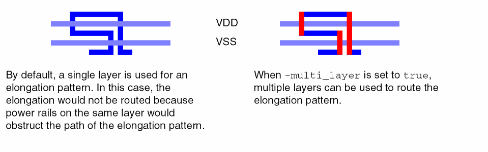
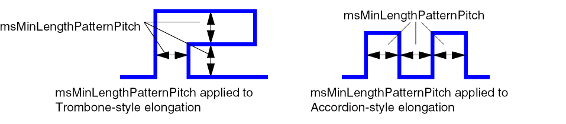
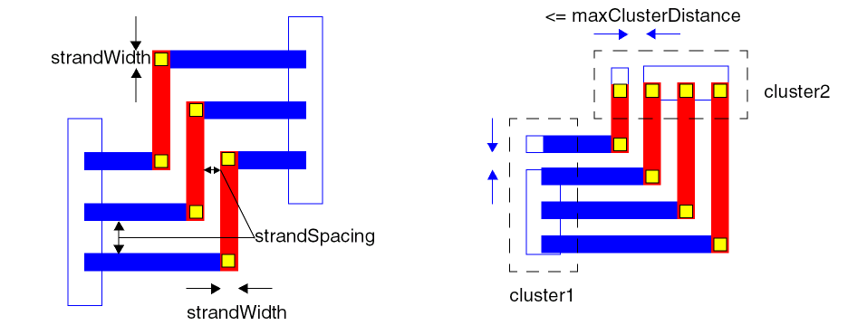

9
Specialty Route Commands
This chapter describes the Tcl commands for mixed signal and other specialty routing.
The commands are sorted by type and presented in the following order:
- Bus Routing Commands
- Segment-style Routing Commands
- Spine-style Routing Commands
- Star Routing Commands
- Custom Topology Routing Commands
- Pair Routing Commands
- Shield Routing Commands
- Matched Length Routing Commands
- Strand Routing Commands
Bus Routing Commands
This section includes commands related to routing buses.
bus_route
bus_route
[ -allow_violations [ true | false ] ]
[ -set d_setObj ]
[ -critic [ true | false ] ]
Routes buses in the given set or in the entire design.
Before running this command, you must first form the bus, using net_bundle. This grouping can be done with the nets in a set, or combined with
Arguments
Example
The following command creates and routes a bus from nets whose names begin with dataIN.
set dataINNets [find_net -name dataIN*]
create_group -type net_bundle -name dataINbus -set $dataINNets
bus_route -set $dataINNets
Related Information
bus_tunnel
bus_tunnel -setd_setObj -region {f_xlo f_ylo f_xhi f_yhi} -layerFroms_layerName-layerTos_layerName[ -adjustVias [ true | false ] ] [ -keepDistance [ true | false ] ] [ -partialResult [ true | false ] ] [ -viaStag [ true | false ] ]
Re-routes nets in the given set by tunneling from the from layer to the to layer within the given region.
Arguments
Example
The following example re-routes wires on the Metal1 layer to the Metal2 layer for nets in the myNets set within the given region with perpendicular vias, keeping existing spacing between wires and discarding any re-routes that cannot be completed.
bus_tunnel -set $myNets -region {10 10 20 20} -layerFrom Metal1 -layerTo Metal2 \
-keepDistance true -viaStag false -partialResult false
Related Information
finish_bus_route
finish_bus_route -setd_setObj| -setFromTod_setObj[ -region {f_xlo f_ylo f_xhi f_yhi} ] [ -allow_violations [ true | false ] ] [ -exclude_p2p [ true | false ] ] [ -no_wrong_way [ true | false ] ] [ -region {f_xlo f_ylo f_xhi f_yhi} ] [ -verbose [ true | false ] ]
Finishes bus routing for guides in the given set (-set) or for a set of nets (-setFromTo). For unrouted busses, use bus_route instead.
Arguments
Example
The following command finishes bus routing for guides in the given set.
finish_bus_route -set [get_selection_set]
Related Information
Segment-style Routing Commands
These commands let you create segments, two- and three-segment trees, and vias to connect the segments.
add_segment
add_segment -nets_netName-layers_layerName{-from_loc {f_xf_y} | -from {LMOST | RMOST | BMOST | TMOST | LBOUND | RBOUND | TBOUND | BBOUND}} {-to_loc {f_xf_y} | -to {LMOST | RMOST | BMOST | TMOST | LBOUND | RBOUND | TBOUND | BBOUND}} [ -begin_extf_userunit] [ -end_extf_userunit] [ -check [ true | false ] ] [ -convert_to_pin [ true | false ] ] [ -deviationf_userunit] [ -deviation_dir {LEFT | RIGHT | BOTTOM | TOP} ] [ -fix_violation [ true | false ] ] [ -route_type {powerTieOff | shield | shieldTieOff | powerTap | spine} ] [ -remove_overlaps [ true | false ] ] [ -shield [ true | false ] ] [ -widthf_userunit]
Adds a route segment for the given net on the given layer from and to the given locations, relative pins, or relative boundaries. By default, if the segment causes a DRC violation, it will automatically be moved to the nearest DRC clean location within the bounds given by the -deviation argument and, optionally, in the direction given by -deviation_dir. The added segment can optionally be converted to a pin shape (-convert_to_pin).
For proper placement, at least one of the from and to locations must be given as a location or relative pin. You cannot use relative boundaries (*BOUND) for both -from and -to arguments.
Arguments
|
Specifies the begin extent of the segment. Refer to Figure Figure 9-1 for an example of how extents are handled. |
||
|
When set to |
||
|
Specifies the maximum deviation, in microns, from the given destination that the segment can be moved to prevent a DRC violation. The default value is one track. |
||
|
Specifies the direction for a deviation, if the added segment causes a DRC violation. By default, the closest DRC clean location is used. |
||
|
Specifies the end extent of the segment. Refer to Figure Figure 9-1 for an example of how extents are handled. |
||
|
If the added segment will cause a DRC violation, the segment will be moved to the nearest DRC clean location subject to the bounds given by |
||
|
The segment will be added at the given location only if it does not cause a DRC violation. |
||
|
|
||
|
Specifies the relative location, as a pin or boundary, from which to start the segment. |
||
|
When |
||
|
|
||
|
Specifies the route type for the added segment. The default is |
||
|
When set to |
||
|
|
||
|
Specifies the relative location, as a pin or boundary, at which the segment must end. |
||
|
Specifies the width of the segment. By default, the segment width is the |
||
Example
The following command adds a segment to netA on layer Metal2.
add_segment -net netA -from_loc {900 850} -to_loc {910 850} -layer Metal2
The following command adds a segment to netA on M2 from the topmost pin of the net to the bottom boundary with a width of 0.6.
add_segment -net netA -layer M2 -width 0.6 -from TMOST -to BBOUND
Figure 9-1 shows how setting the extents can affect the routing.
Figure 9-1 Specifying the Extents for a Segment
Related Information
add_tree
add_tree -setd_setObj| -nets_netName| {-buss_busName[ -bitsi_count:i_count]} -segA true -layerAs_layerName[ -dirA [ vertical | horizontal ] ] [ -widthAf_userunit] -segC [ true | false ] -layerCs_layerName[ -dirC [ vertical | horizontal ] ] [ -widthCf_userunit] [ -segB [ true | false ] -layerBs_layerName[ -dirB [ vertical | horizontal ] ] [ -widthBf_userunit] [ -segB_from {LMOST | RMOST | BMOST | TMOST} [ -segB_offseti_tracks] [ -segB_multiplieri_tracks] ] {-from {LMOST | RMOST | BMOST | TMOST | LBOUND | RBOUND | TBOUND | BBOUND} [ -from_xf_x| -from_yf_y] |-from_pins_pinName|-from_loc {f_xf_y} [ -from_offseti_tracks]} {-to {LMOST | RMOST | BMOST | TMOST | LBOUND | RBOUND | TBOUND | BBOUND} [ -to_xf_x| -to_yf_y] | -to_pins_pinName| -to_loc {f_xf_y} [ -to_offseti_tracks] } [ -check [ true | false ] [ -convert_to_pin [ true | false ] ] [ -deviationf_userunit] [ -fix_violation [ true | false ] ]
Creates segments for nets in a set or for bits in a bus to form two-segment or three-segment trees.
Two-segment trees are typically L-shaped, using arguments for segments A and C, given by layerA and layerC. Configurations for two-segment trees are shown in the following figure.
Three-segment trees are typically Z-shaped, using arguments for segments A, B, and C, given by layerA, layerB, and layerC. Configurations for three-segment trees are shown in the following figure.
You must specify the layer to use for each segment, and the from and to location for the tree. You can specify the from and to locations using any of these methods:
- Pin name
- Coordinates
-
Relative pin position (
TMOSTfor topmost,BMOSTfor bottommost,LMOSTfor leftmost,RMOSTfor rightmost) -
Relative boundary position (
TBOUNDfor topmost,BBOUNDfor bottommost,LBOUNDfor leftmost,RBOUNDfor rightmost)
By default, the preferred direction (horizontal or vertical) for the first segment layer is used, with the opposite direction used for next segment, and so on. You can override these settings using the -dirA, -dirB, and -dirC arguments.
The following figure illustrates the placement of the middle segment of a three-segment tree.
To add three-segment trees for bits of a bus, use the -segB_multiplier to specify the spacing (in trunks) between nets.
The add_tree command is typically used after power routing to route critical nets, and before routing other signals. After the segments are added, connecting vias can be added using add_via,
Arguments
Example
The following command adds an L-tree from the leftmost pin of the net in the selected set to an absolute location {20 40}.
add_tree -set [get_selection_set] -segA true -dirA horizontal -layerA Metal3 -segC true -dirC vertical -layerC Metal2 -from LMOST -to_loc {20 40}
The following command adds a Z-tree from the topmost pin to the bottommost pin for the nets in the selected set with a spacing of 10 trunks between nets, and the middle segment of the first net offset by one trunk from the midpoint between the endpoints.
add_tree -set [get_selection_set] -segA -dirA horizontal -layerA Metal3 \
-segB true -dirB vertical -layerB Metal2 -segB_offset 1 -segB_multiplier 10 \
-segC true -dirC horizontal -layerC Metal3 -from TMOST-to BMOST
Guides will be created at the intersections of the route segments and can be added using detail_route.
The following commands create a bus from a set of nets, then create trees for bits 2 through 4.
replace_set -set1 [find_net -name Bus* -ignore_case true -no_wildcard false ] \
-set2 [get_selection_set]
create_group -name myBus -set [get_selection_set] -type net_bundle
add_tree -bus myBus -bits "2:4" -segA -dirA horizontal -layerA Metal3 \
-segB true -dirB vertical -layerB Metal2 -segB_offset 1 -segB_multiplier 10 \
-segC true -dirC horizontal -layerC Metal3 -from TMOST-to BMOST
Related Information
add_via
add_via -nets_netName-names_viaName-loc {f_xf_y} [ -check [ true | false ] ] [ -convert_to_pin [ true | false ] ]
Adds a via to a net at the given location.
Arguments
|
When set to |
|
Example
The following command adds a VIA2X via to netA.
add_via -net netA -name VIA2X -loc {907 1172}
Related Information
Spine-style Routing Commands
Spine-style routing is used to reduce delay from the output driver to the farthest load and minimize the global skew.
balance_route
balance_route
{-set d_setObj | -net1 s_netName -net2 s_netName}
-spine_on_layers {s_layerName…}
[ -ignore_pins_in_instances {s_instanceName…}
| -ignore_pins_in_set d_setObj ]
[ -half_shield [ true | false ] ]
[ -multiple_spines [ true | false ] ]
[ -pin_pair_dist f_distance ]
[ -spine_dist f_distance ]
[ -tie_pins_to_spine [ true | false ] ]
Balances the geometry for clock pairs in a given set (-set), or for a single net pair (-net1 -net2). By default, a single spine is created, but multiple spines can be used (-multiple_spines true).
To get a list of net pairs ordered by decreasing calculated spine length, run report_balanced_length. Then use the list to balance route the net pairs in order for the best results.
Power should be routed before using this command because the router will attempt to snap the spine to power rails.
Arguments
Example
The following figure shows how the half_shield argument affects the placement of balanced routes.
The following figure shows a generalized example of balance routing using a single spine (default) compared with multiple spines.
The following command balances routes on nets N1 and N2 using multiple spines and with half-shields on both nets. When creating the spine, pins of instance INST1 are ignored, only pin pairs from N1 and N2 that are within 0.7 microns of each other will influence the placement of the spine, and layers M1 and M2 will be used to the route the spine.
balance_route -net1 N1 -net2 N2 -spine_on_layers {M1 M2} -ignore_pins_in_instances INST1 -pin_pair_dist 0.7 -multiple_spines true -half_shield true
Related Information
report_balanced_length
report_balanced_length -set1d_setObj-set2d_setObj-files_fileName-spine_on_layers {s_layerName…} [ -ignore_pins_in_instances {s_instanceName…} | -ignore_pins_in_setd_setObj] [ -half_shield [ true | false ] ] [ -multiple_spines [ true | false ] ] [ -pin_pair_distf_distance] [ -spine_length [ true | false ] ]
Outputs an ordered list of net names to the named file. The list is created by calculating the balanced spine length for each net from set1 and its paired net from set2, and listing the pairs in order, starting with the longest spine length, to the shortest. Use the output to prioritize the routing of the nets for balance_route, which uses the same arguments to configure the spine.
Arguments
Example
The following example includes a procedure for ordering net pairs in a file for balanced routing by their calculated spine length (clockSort), and a procedure to balance route the net pairs in decreasing spine length order (clockRoute).
# clockSort
# Input: infile is a file containing two net names per row
# Output: outfile is a file containing the sorted net pair names by decreasing
# spine length; includes calculated spine length for each pair.
proc clockSort {infile outfile} {
set clkset1 [create_set]
set clkset2 [create_set]
set fileID [open $infile r]
while {[gets $fileID line ] >= 0} {
set clk1 [lindex [split $line \t] 0]
set clk2 [lindex [split $line \t] 1]
set clkset1 [or_sets -set1 [find_net -name $clk1 -ignore_case true \
-no_wildcard true -silent] -set2 $clkset1]
set clkset2 [or_sets -set1 [find_net -name $clk2 -ignore_case true \
-no_wildcard true -silent] -set2 $clkset2]
}
report_balanced_length -set1 $clkset1 -set2 $clkset2 -file $outfile \
-spine_length true
close $fileID
}
# clockRoute
# Input: infile is the name of a file containing two net names per row
# The nets are balance routed, one pair at a time.
proc clockRoute {infile} {
set fileID [open $infile r]
while {[gets $fileID line ] >= 0} {
set clk1 [lindex [split $line \t] 0]
set clk2 [lindex [split $line \t] 1]
set tmppair [or_sets -set1 [find_net -name $clk1 -ignore_case true \
-no_wildcard true ] -set2 [find_net -name $clk2 -ignore_case true \
-no_wildcard true ] ]
balance_route -set $tmppair
}
close $fileID
}
The following commands sort a list of net pairs in nets_in.txt by decreasing spine length, then balance routes the pairs, one-at-a-time.
clockSort nets_in.txt nets_sorted.txt
clockRoute nets_sorted.txt
eclk1 lclk1
eclk2 lclk2
eclk3 lclk3
Example output file (includes the optional calculated spine length for each net pair):
eclk2 lclk2 10.2
eclk1 lclk1 8.1
eclk3 lclk3 6.4
Related Information
report_spine_nets
report_spine_nets
[ -net {s_netName…} | -set d_setObj ]
Reports the spine parameters that were set using set_spine_nets for the given nets or nets in the set. By default, all nets that were processed by set_spine_nets are reported.
Arguments
Example
The following example shows how set_spine_nets settings can be reported using this command.
set_spine_nets -net net1 -direction vertical -trunk_type single_median -tap_type steiner
report_spine_nets
net net1:
vertical
trunk type single_median
tap type steiner
Related Information
route_taps
route_taps
-set d_setObj
[ -use_term_taper [false|true ] ]
[ -gather_routes [ true | false ] ]
Routes tap connections for nets in the set. Use this command after routing only spines for the nets with one of the following:
Arguments
Example
The following example routes tap connections for the nets in the selected set, using the taper rule on the terms.
route_taps -set [get_selection_set] -use_term_taper
Related Information
set_route_is_spine
set_route_is_spine
-set d_setObj
Identifies which portion of a net is the trunk. This is particularly useful if the trunk is prerouted.
The contents of a trunk are labeled as spines. If any portion of the net is labeled as spines, it is assumed that the spine contains routes or terms that are also labeled as spines. If the trunk type is not single_driver or single_median, then the portion of the net that is connected to the driver is also considered to be a spine.
Arguments
|
Specifies a set of objects whose routes or terms will be labeled as spines. |
||
Related Information
set_spine_nets
set_spine_nets
{-net {s_netName…} | -set d_setObj}
[ -bias_mode {middle | side | ratio} ]
[ -clear [ true | false ] ]
[ -direction {vertical | horizontal}
[ -layers {s_layerName…} ]
[ -max_cluster_dist f_distance ]
[ -max_pins i_count]
[ -optimize_cluster_ratio i_ratio]
[ -tap_type {direct | short_steiner | steiner | tree}]
[ -trunk_rule_spec s_routeSpecName ]
[ -trunk_type
{ single_driver | single_median | single_middle |
| single_in_channel | multi_in_channel
| narrow_middle | narrow_median | wide | tree} ]
Sets parameters for spine routing. Usually, this is not required before running spine_route because the spine router can automatically tune the routing based on the configuration of the net. Use this command before running spine_route to force the spine router to use certain settings.
The spine router will normally use a narrow_middle, narrow_median or wide trunk type, depending on the aspect ratio of the net and the location of the receiver pins. If you issue this command without arguments, the spine router will use a single_median trunk type instead.
To check the spine parameters that were set by this command, use report_spine_nets.
Arguments
|
(Applies only for |
||
|
(Default) Places the spine at a position relative to the ratio of the receiving pins on both sides of the channel. The distance from the spine to the edges of the sides have the same ratio as the pins on the two sides. The spine will be closer to the side with more pins. |
||
|
Resets parameters that are set by this command to their default settings. |
||
|
(Applies only if the |
||
|
Sets preferred layers for the spine. The lowest layer that matches the spine’s direction will be preferred. If only one layer is given, it will be used, even when the direction of the spine is perpendicular to the layer’s routing direction for |
||
|
Used with |
||
|
Connects each tap directly to the trunk. This is the default when |
||
|
This is a type of |
||
|
Connects to the nearest receiver group or to the trunk, whichever is closest. |
||
|
The tap topology is determined automatically by spine_route based on the aspect ration of the bounding box of the net’s receiver pins. |
||
|
(Requires |
||
|
Makes a trunk that is aligned with the median coordinate in the direction of the spine. |
||
|
Makes a trunk that is aligned with the middle of the net’s bounding box. |
||
|
(Requires |
||
|
Makes a single trunk that is located at the median coordinate in the spine direction. This is the default. |
||
|
The trunk placement is determined automatically by spine_route based on the aspect ratio of the net and the topology of the receivers and drivers. |
||
|
Makes a trunk by clustering the receivers to identify representatives, then forming a tree where every driver-to-representative path is a shortest path. This is typically used when the net is approximately equal in height and width. |
||
Example
The following command causes spine_route to route using single_median trunks instead of one of the normal trunk type defaults: narrow_middle, narrow_median or wide.
set_spine_nets
The following commands create a single vertical spine on the M2 layer that is connected to the driver.
set_spine_nets -net net1 -trunk_type single_driver -layers M2 -direction vertical
spine_route -net net1
Related Information
spine_route
spine_route
{-net {s_netName…} | -set d_setObj}
[ -fix_trunk [ true | false ] ]
[ -spine_only [ true | false ] ]
[ -tap_embedding {guide | global | detail} ]
[ -use_existing_guides [ true | false ] ]
Routes a net or nets using spine-style routing. A primary trunk is routed from the output driver pin to the farthest receiver, then other receivers are connected in clusters or individually to the primary trunk.
By default, the spine router will use a narrow_middle, narrow_median or wide trunk type, depending on the configuration of the net. Direct taps will be used for narrow topologies and short_steiner connections will be used for all others. To override these defaults or set the spine direction, layers, or trunk rule spec, use set_spine_nets.
By default, all existing guides are removed before routing spines. Use -use_existing_guides true to keep existing guides.
Arguments
Example
The following command routes the clkA net by automatically configuring the tap topology based on the locations of the driver and receivers.
spine_route -net clkA
The following commands ensure that a wide trunk topology with steiner taps will be used to route the net.
set_spine_nets -net wn1 -trunk_type wide -tap_type steiner
spine_route -net wn1
Related Information
unset_route_is_spine
unset_route_is_spine
-set d_setObj
Re-labels a portion of a net that is incorrectly designated as a spine.
Arguments
|
Specifies a set of objects whose routes or terms must not be labeled as spines. |
||
Related Information
unset_spine_nets
unset_spine_nets
{-set d_setObj | -net {s_netName…}}
Removes the spine designation for the spine nets in the set or in the list and resets any spine parameters that were associated with those nets.
Arguments
Related Information
Star Routing Commands
This section describes commands used to connect sinks to a single driver or sinks to multiple drivers.
star_route
star_route
{ -set d_setObj }
[ -convert_terminals {sink | driver | none}]
[ -multilevel [ true | false ] ]
[ -multidriver [ true | false ] ]
[ -driver_constraint [ true | false ] ]
[ -driver s_termName ]
[ -fromLayer s_layerName ]
[ -instance s_instName ]
[ -connect_drivers [ true | false ] ]
[ -guides_only [ true | false ] ]
[ -route_only [ true | false ] ]
[ -incremental [ true | false ] ]
[ -honor_to_pt [ true | false ] ]
[ -allow_share [ true | false ] ]
[ -allowViolations [ true | false ] ]
[ -direction {horizontal | vertical} ]
[ -include_term_set d_setObj ]
[ -exclude_term_set d_setObj ]
[ -include_term_names {s_termName…} ]
[ -exclude_term_names {s_termName…} ]
[ -region {f_xlo f_ylo f_xhi f_yhi} ]
[ -include_term_region {f_xlo f_ylo f_xhi f_yhi} ]
[ -exclude_term_region {f_xlo f_ylo f_xhi f_yhi} ]
Routes nets that have one driver and multiple pins, or sinks. By default, each sink is connected directly to the driver as shown in Figure 9-2.
Figure 9-2 Single Level Star Routing
If a net has many sinks in a matrix-type layout of rows and columns, use -multilevel to connect the driver to multiple interconnected sinks. By default, when -multilevel is specified, sinks are connected horizontally in rows. To change this, specify -direction vertical to connect multilevel sinks vertically in columns. Figure 9-3 shows examples of a multi-level net star routed horizontally and vertically.
Figure 9-3 Multi-level Star Routing
To star route a net that has all sinks or all drivers, use -convert_terminals to convert each net to one driver and multiple sinks before routing. The driver for each net will be in the leftmost, rightmost, topmost or bottommost location relative to the sinks.
To star route a net that has multiple bidirectional instTerms, set the isDriver constraint to true on the driver instTerm, and use -driver_constraint to recognize the constraint setting.
If there are multiple drivers on a net, use -multidriver to connect sinks to the nearest driver and -connect_drivers to connect the drivers to each other. Figure 9-4 shows an example of this type of star routing with multiple drivers and sinks. By default, sinks are routed to only one driver on a net.
Figure 9-4 Star Routing Multiple Drivers to Multiple Sinks
By default, if a net has existing guides and/or route segments, star_route will not create additional guides. To create additional routes for a net, use create_fromto with -incremental true to create the additional guides, then use star_route with -route_only true -incremental true to route them.
Arguments
|
When set to |
||
|
When set to |
||
|
When set to |
||
|
Specifies the conversion type for star routing a net that consists of all sinks or all drivers. Each converted net will have only one driver at the leftmost, rightmost, topmost or bottommost position relative to the sinks. |
||
|
For each selected net, converts all but one driver to sinks before routing. |
||
|
For each selected net, converts one sink to a driver before routing. |
||
|
[Applies only when |
||
|
When set to |
||
|
Specifies the lower-left (f_xlo, f_ylo) and the upper-right (f_xhi, f_yhi) bounding box coordinates for an area to be excluded from processing. Terminals in this area will not be considered. |
||
|
When set to |
||
|
When set to |
||
|
Specifies the lower-left (f_xlo, f_ylo) and the upper-right (f_xhi, f_yhi) bounding box coordinates for an area. Only terminals in this area will be considered. |
||
|
Specifies whether additional guides can be routed for a net that has existing route segments. When set to
For incremental star routing, use create_fromto with |
||
|
Star routing connects the driver to only the specified instance. |
||
|
When set to |
||
|
When set to |
||
|
Specifies the lower-left (f_xlo, f_ylo) and the upper-right (f_xhi, f_yhi) bounding box coordinates for the area to be processed. Only terminals in this area are considered. |
||
|
When set to |
||
Examples
The following command star routes the A1 net.
star_route -set [find_net -name A1]
Custom Topology Routing Commands
This section describes commands used to customize net topology.
create_fromto
create_fromto -fromSetd_setObj-toSetd_setObj[ -allow_duplicate [ true | false ] ] [ -constraintGroups_groupName] [ -fromLayers_layerName] [ -fromPoint {f_x f_y} ] [ -incremental [ true | false ] ] [ -must_connect [ true | false ] ] [ -toLayers_layerName] [ -toPoint {f_x f_y} ]
Creates a route guide between terminals. A constraint group can be assigned to the guide to specify constraints for routing, which will have precedence over constraints for the net, global net default, design and foundry rules. For terminals with more than one pin shape, only one pin will be connected by default, but the choice of pins can be restricted to a specific layer.
By default, if a net has existing guides and/or route segments, create_fromto will not create additional guides. When -incremental is true, guides can be added to a net that has existing guides and/or route segments. However, duplicate guides between a driver and sink will not be added.
Arguments
Examples
Example 1—Create a guide between two terminals
The following example creates a guide between terminals t1 and t3.
create_fromto -fromSet [find_terminal -name t1] -toSet [find_terminal -name t3]
Example 2—Route a guide between two terminals
In the following example, a guide is routed between two terminals of a net. First, a guide is created between the terminals, then the routing flow is run on the net without creating additional guides in the global route step.
# Specify the net to route
set myNet [find_net -name AVCC1]
# Create a guide between two terminals create_fromto -fromSet [find_inst_term -instance_name u_40 -name VDD3] -toSet [find_inst_term -instance_name u_f27 -name VDD_3P3V] # Run the routing flow global_route -set $myNet -create_guides false -mode full
croute -set $myNet
detail_route -set $myNet
Pair Routing Commands
For more information on how to use these commands in a flow, refer to “Examples for Pair Routing Scripts”.
pair_create_topology
pair_create_topology
[ -set d_setObj ]
[ -pref_regions ]
Creates netPairTerms at the closest location to each set of paired memberNet pins. A netPairRoute guide is added to connect the source and target netPairTerms.
Arguments
|
Identifies regions with pins whose preferred layer routing direction is opposite to the preferred direction for the most efficient routing to or from the pins. Each no preferred direction region is marked with a rectangular boundary and the router is permitted to wrong-way route as needed within those regions. When pair_divide is run, the no preferred direction region markings are removed. By default, the router routes in the preferred direction for a layer. |
|
|
Restricts processing to the memberNets in the given set. By default, all memberNets are processed. |
Example
Refer to “Examples for Pair Routing Scripts” for an example of how this command is used in a pair routing flow.
pair_divide
pair_divide
[ -set d_setObj]
[ -center_vias [ true | false ] ]
[ -delete_violations [ true | false ] ]
[ -preserve_topology [ true | false ] ]
[ -routing_grid [ true | false ] ]
[ -space_vias [ true | false ] ]
[ -use_w2vpitch [ true | false ] ]
Divides the netPairRoutes into the memberRoutes by dividing all route segments and vias in the netPairRoutes. The resultant memberRoutes are connected to the memberNet source and target pins. The netPairTerms and the netPairRoutes are removed.
After running this command, use verify_connectivity to check for connectivity violations.
Arguments
|
When
Default: ( |
|
|
When set to |
|
|
If set to |
|
|
When |
|
|
Restricts processing to the memberNets in the given set. By default, all memberNets are processed. |
|
|
When |
|
|
When |
|
Example
Refer to “Examples for Pair Routing Scripts” for an example of how this command is used in a pair routing flow.
pair_report
pair_report
Outputs statistics to the Transcript area for net pairs. In addition, a fat.rpt file is created that reports net pair violations when the unpaired wire length exceeds 10*minWidth for the lowest metal layer.
In the statistics output, the following are reported:
In fat.rpt, the following information is reported:
Arguments
Example
The following example shows output from pair_report for a routed net pair.
PairStats: composite divide (member nets) final (all nets)
PairStats: opens shorts opens shorts unpair% opens shorts unpair% cpu
PairStats: Summary: 0 0 0 0 1 184 0 1 11.9
#= PAIR ROUTING REPORT =========================================================
#|
#| Member Other
#| Step Nets Opens Shorts Nets Opens Shorts
#|---------------------------------------------------------------
#| start 2 2 0 198 184 0
#|
#| Composite Other Nets Time(sec)
#| Step Opens Shorts Opens Shorts Step Total
#|---------------------------------------------------------------
#| create_topology 1 0 184 0 0.1 0.1
#| route 0 0 184 0 11.6 11.7
#|
#| Member Other Unpaired Violations Time(sec)
#| Step Opens Shorts Opens Shorts Length Percent (limit) Step Total
#|------------------------------------------------------------------------------
#| divide 0 0 184 0 7.04 1% 1 (3.60) 0.1 12.3
#| clean 0 0 184 0 7.04 1% 1 (3.60) 0.1 12.3
The following shows contents of the fat.rpt file created for the previous example.
# = FAT NET OPENS ================================================================================
# | Net | Route | Length |
# |---------------------------------|---------------------------------|--------|
# |---------------------------------|---------------------------------|--------|
# = PAIRING VIOLATIONS ========================================================= # | Unpaired length limit 3.60 |
# | |PinPair | Pairing | Unpaired |
# | Net | # Vias | Length |Distance| Best | | Length |Percent |
# |-------------|--------|--------|--------|--------|--------|--------|--------|
# |FLASH_1p0[2] | 5| 1156.69| 17.68| 1147.86| 1143.24| 4.62| 0.4|
# |-------------|--------|--------|--------|--------|--------|--------|--------|
# = PAIR STATISTICS ============================================================
# |----------------------------------------------------------------------------|
# | PAIR: 1
# |----------------------------------------------------------------------------|
# | Net: FLASH_1p0[2]
# |----------------------------------------------------------------------------|
# | Metal1 | #Vias: 0 | Wire Length: 0.00
# | Metal2 | #Vias: 0 | Wire Length: 452.88
# | Metal3 | #Vias: 5 | Wire Length: 703.81
# | Metal4 | #Vias: 0 | Wire Length: 0.00
# | Metal5 | #Vias: 0 | Wire Length: 0.00
# | Metal6 | #Vias: 0 | Wire Length: 0.00
# | Metal7 | #Vias: 0 | Wire Length: 0.00
# | Metal8 | #Vias: 0 | Wire Length: 0.00
# | Metal9 | #Vias: 0 | Wire Length: 0.00
# | Total Vias: 5 | Total Wire Length: 1156.69
# |----------------------------------------------------------------------------|
# | Net: FLASH_1p0[1]
# |----------------------------------------------------------------------------|
# | Metal1 | #Vias: 0 | Wire Length: 0.00
# | Metal2 | #Vias: 0 | Wire Length: 452.80
# | Metal3 | #Vias: 5 | Wire Length: 701.77
# | Metal4 | #Vias: 0 | Wire Length: 0.00
# | Metal5 | #Vias: 0 | Wire Length: 0.00
# | Metal6 | #Vias: 0 | Wire Length: 0.00
# | Metal7 | #Vias: 0 | Wire Length: 0.00
# | Metal8 | #Vias: 0 | Wire Length: 0.00
# | Metal9 | #Vias: 0 | Wire Length: 0.00
# | Total Vias: 5 | Total Wire Length: 1154.57
# |----------------------------------------------------------------------------
# | Differences per layer for this pair:
# |----------------------------------------------------------------------------|
# | Metal1 | Delta Vias: 0 | Delta Wire Length: 0.00
# | Metal2 | Delta Vias: 0 | Delta Wire Length: 0.08
# | Metal3 | Delta Vias: 0 | Delta Wire Length: 2.04
# | Metal4 | Delta Vias: 0 | Delta Wire Length: 0.00
# | Metal5 | Delta Vias: 0 | Delta Wire Length: 0.00
# | Metal6 | Delta Vias: 0 | Delta Wire Length: 0.00
# | Metal7 | Delta Vias: 0 | Delta Wire Length: 0.00
# | Metal8 | Delta Vias: 0 | Delta Wire Length: 0.00
# | Metal9 | Delta Vias: 0 | Delta Wire Length: 0.00
Related Information
pair_report_stats
pair_report_stats
Outputs statistics to the Transcript area for net pairs.
- Number of opens on member nets
- Number of shorts on member nets
- Number of opens on other nets
- Number of shorts on other nets
- Unpaired total length
- Unpaired percentage of total length
- Number of net pair violations and maximum acceptable unpaired length
Arguments
Example
The following example shows output from pair_report_stats for a routed net pair.
| P A I R R E P O R T |
| Member Other Unpaired Violations |
| opens shorts opens shorts Length Percent (limit) |
| ------- ------ ------ ----- ------ -------- ------- ---------- -----|
| 0 0 184 0 12.13 1 1 (3.60) |
Related Information
Preparing for Pair Routing
To create pair routes, you begin by Defining Net Pairs. You can optionally change the required spacing between the pair routes by Customizing Gap Spacing.
Defining Net Pairs
In this step, you identify pairs of memberNets and create a netPairGroup for each pair. A netPairNet is associated with each netPairGroup.
create_group -names_netPairNet-setd_setObjofNets-type net_pair
where s_netPairNet is the name of the composite net and d_setObjofNets is a set containing the memberNets to pair.
The following command creates the composite net, Net01_pair, from the net_pair grouping of memberNets Net0 and Net1:
create_group -name Net01_pair -set [or_sets -set1 [find_net -silent -name Net0 -no_wildcard true -ignore_case false ] -set2 [find_net -silent -name Net1 -no_wildcard true -ignore_case false ] ] -type net_pair
Customizing Gap Spacing
To change the gap between the nets of a pair from the default spacing,
- Create a constraint group.
- Add the desired spacing for the layers to the constraint group.
-
Assign the constraint group as the reflexive constraint group for the composite net. The new spacing must be larger than or equal to the foundry
minSpacing.
create_constraint_group -name GAP
set_layer_constraint -layer Metal1 -group GAP -constraint minSpacing -hardness hard -Value 0.4
set_layer_constraint -layer Metal2 -group GAP -constraint minSpacing -hardness hard -Value 0.4
set_layer_constraint -layer Metal3 -group GAP -constraint minSpacing -hardness hard -Value 0.4
set_layer_constraint -layer Metal4 -group GAP -constraint minSpacing -hardness hard -Value 0.4
set_constraint_group -reflexive GAP -net_group Net01_pair
Examples for Pair Routing Scripts
The following example scripts show the Tcl commands are used to perform pair routing.
# pairs.tcl
#
# Use this script to define net pairs.
# Identify net pairs for routing and group each pair using create_group with
# -type net_pair so that they will be recognized by the pair_* commands
# -name for the name of the netPairGroup and the associated composite net.
create_group -name Net01_pair -set [or_sets -set1 [find_net -silent -name Net0 -no_wildcard true -ignore_case false ] -set2 [find_net -silent -name Net1 -no_wildcard true -ignore_case false ] ] -type net_pair . .
# route.tcl
#
# Use this script to read in the design and perform pair routing.
#
# First load the design
read_db -lib sample -cell sample -view layout
# Source the tcl script that defines the net pairs using create_group -type net_pair source pairs.tcl # Create the guides for the member nets so that the netPair topology can be created. # Ignore power, ground and clock nets update_net_connectivity -all -ignore_types {power ground clock} # Create the netPairTerms and guides that connect them for the netPairRoutes. pair_create_topology # Route the netPairNets and the non-paired nets. global_route local_route croute detail_route # Divide the netPairRoutes into memberRoutes. The netPairRoutes and netPairTerms # are removed. pair_divide # Check the connectivity for any remaining opens and shorts. verify_connectivity -all
Related Information
|
|
Shield Routing Commands
For more information on how to use these commands in a flow, refer to “Examples for Shield Routing Scripts”.
add_shield_wires
add_shield_wires
[ -net {s_netName…} | -set d_setObj | -region {f_xlo f_ylo f_xhi f_yhi} ]
[ -alternate_tie [ true | false ] ]
[ -coaxial_tie_freq f_userunit ]
[ -connect_shields_only [ true | false ] ]
[ -fix_routes [ true | false ] ]
[ -floating_shields [ true | false ] ]
[ -report_shield_wires [ true | false ] ]
[ -redundant_vias [ true | false ] ]
[ -adj_layer_redundant_ties [ true | false ] ]
[ -honor_valid_routing_layers [ true | false ] ]
[ -no_router [ true | false ] ]
[ -shield_min_length f_userunit ]
[ -shield_terms [ true | false ] ]
[ -shield_tie_frequency f_userunit ]
[ -shield_around_vias [ true | false ] ]
[ -shield_around_vias_all [ true | false ] ]
[ -shield_enclose_vias [ true | false ] ]
[ -shield_maintain_same_net [ true | false ] ]
[ -tandem [ true | false ] ]
[ -tie_shield [ true | false ] ]
[ -ties_use_shield_width [ true | false ] ]
[ -use_grid {route|mfg} ]
[ -use_existing_pg_only [ true | false ] ]
[ -via_width f_userunit ]
[ -verbose [ true | false ] ]
Adds shield wires for the given nets that have been identified by shield_net. By default, vias are added to tie the new shield wires to their respective shield nets. You can optionally specify the maximum distance between ties, the minimum length for signal route segments to add shields to, and whether shielding can be added around vias. On completion, a shield coverage report is output. For more information on the shield coverage report, refer to “report_shield_wires”.
If you specified dual net parallel shielding using shield_net -shield_net_alternate, you can specify the placement of the two shield nets using the -alternate_tie argument, as shown in Figure 9-6.
droute.shields_in_violation environment variable to true before running add_shield_wires, then run the check commands described in Verify Commands. Arguments
|
By default and when |
|
|
(Applies only for dual net parallel shields) If |
|
|
Specifies the maximum distance between ties that must be inserted to tie the tandem shield wires and parallel shield wires for coaxial shielding. |
|
|
If |
|
|
If
Default: The route status for the generated shields are set to |
|
|
If |
|
|
If |
|
|
If |
|
|
Adds shield wires for the given nets that have been identified by shield_net. |
|
|
If |
|
|
Adds redundant vias to tie shield wires to shield nets at every location where the shield wires overlap their respective existing power/ground rails. If power/ground rails overlap the shield wires, this argument offers a cleaner solution for inserting multiple ties than |
|
|
Adds shield wires for nets in the area given by the lower left (f_xlo f_ylo) and upper right (f_xhi f_yhi) coordinates. Operates only nets in the region that have been identified by shield_net. |
|
|
Adds shield wires for nets in the given set that have been identified by shield_net. |
|
|
Determines whether shield wires will be added around vias. Refer to “Shielding Around Vias” for an example. |
|
|
When |
|
|
When |
|
|
When |
|
|
Prevents shielding of any signal wire that is shorter than the given length. By default, Space-based Router and Chip Optimizer will attempt to shield all routes of the signal nets given by |
|
|
Specifies the maximum distance between ties that must be inserted to tie the new shield wires to their respective shield nets. If this argument is not given and the |
|
|
Specifies whether ties should be added to tie the new shield wires to the shield nets that they belong to. By default, shield ties are added.
If you choose to exclude shield ties ( |
|
|
If |
|
|
If |
|
|
By default, total shield coverage by layer is reported. For |
|
|
(Applies only to tandem split shields) Specifies the width, in user units, of the vias that will be inserted to tie tandem split shields. |
|
Example
The following command adds shield wires for all nets in the entire design that have been identified for shielding by the shield_net command and ties the added shield wires to the shield net.
add_shield_wires
The following command adds shield wires for all nets that have been identified for shielding by the shield_net command but restricts the added shielding to those signal wires that are greater than or equal to the shield_min_length argument value of 20.
add_shield_wires -shield_min_length 20
The following command adds shield wires for net_1 and sets the route status for the added shields to fixed.
add_shield_wires -net net1 -fix_routes
Shielding Around Vias
Figure 9-7 illustrates the difference in results when using -shield_around_vias, -shield_around_vias_all, and -shield_enclose_vias. The examples show the general placement of shield wires around the via but do not include shield ties.
Figure 9-5 Examples of Shielding around Vias
Inserting Shield Ties Using -redundant_vias
The following example shows how -redundant_vias can be used to add via ties at every overlap of the shield wires with their respective power or rail net. In this case, the shield net is VSS (ground).
Dual Net Parallel Shields
The following example shows the difference between the placement of dual net parallel shields when -alternate_tie is set true or false.
Figure 9-6 Dual Net Parallel Shield Placement
Related Information
|
delete_shield_wiresget_use_existing_shapes_for shieldingroute_shield_wiresset_use_existing_shapes_for_shieldingshield_net |
|
|
Refer to “Examples for Shield Routing Scripts” for an example of how this command is used in a shield routing flow. |
delete_shield_wires
delete_shield_wires
{-all | -net {s_netName…} | -set d_setObj}
Removes shield routing (including vias ties) in the entire design, for specific signal nets, or for route segments in the given set.
Arguments
|
Removes shield routing for the route segments in the given set. |
Example
The following command removes shield routing for net2.
delete_shield_wires -net net2
Related Information
report_shield_wires
report_shield_wires
[ -net {s_netName…} | -set d_setObj | -region {f_xlo f_ylo f_xhi f_yhi} ]
[ -verbose [ true | false ] ]
Outputs to the transcript area the shield coverage for the given nets, nets in the given set, or shielded nets in the given region. By default, the total shield length and percentage shielded is reported by layer. You can optionally include shield coverage by net and layer (-verbose).
Arguments
Example
The following example reports the shield coverage for the given net.
report_shield_wires -net net1
route_shield_wires
route_shield_wires [ -gap_space_for_vias [ true | false ] ] [ -adj_layer_redundant_ties [ true | false ] ] [ -connect_shields_only [ true | false ] ] [ -floating_shields [ true | false ] ] [ -report_shield_wires [ true | false ] ] [ -honor_valid_routing_layers [ true | false ] ] [ -redundant_vias [ true | false ] ] [ -ties_use_shield_width [ true | false ] ]
Ties shield routes to the shield nets. Use this command following add_shield_wires -tie_shield false which adds the shield wires without connectivity to the shield nets and adds guides where connectivity is missing.
When spacing is tight and shield wires meet the gap spacing but the shield tie vias cannot be added in the simplest manner because they would violate shield gap spacing, you can specify -gap_space_for_vias false. The router will ignore the shield gap spacing and will add ties only when the minimum spacing for the layer can be met. This is can often be helpful when enclosing vias with preferred direction shields (add_shield_wires -shield_enclose_vias true).
Arguments
Example
Usually, you will use add_shield_wires to route shields and add shield ties. Occasionally this might result in extra routing when adding the shield ties, as shown in Figure 9-7. In situations like this, you can remove the shields and re-route without adding ties, then use route_shield_wires to add the ties using minimum spacing checking instead of gap spacing.
delete_shield_wires -net netA
add_shield_wires -net netA -shield_enclose_vias true -tie_shield false
route_shield_wires -gap_space_for_vias false
Figure 9-7 Example for route_shield_wires Ignoring Gap Spacing
Related Information
set_route_noshield
set_route_noshield
-set d_setObj
-no_shield [ true | false ] ]
Enables or disables shielding on a routes in the set. This command must be issued before running add_shield_wires.
Arguments
Example
The following example prevents shields from being added for the routes in the set.
set_route_noshield -set [get_selection_set] -noShield true
Related Information
shield_net
shield_net
{-net {s_netName…} | -set d_setObj}
-shield_net s_netName
[ -routes [ true | false ] ]
[ -shield_net_alternate s_netName ]
[ -silent [ true | false ] ]
[ -type {parallel | tandem | coaxial | tandem_split} ]
Assigns a shield net to a signal net, and optionally excludes shielding on specific layers by setting constraints. This command flags the signal nets for which the router must reserve additional clearance. By default, the shields will be parallel, unless a specific type is given.
You can choose to use two different nets as parallel shields (-shield_net_alternate), for example, power and ground. In this case, one parallel shield will be power and the other will be ground. When two nets are used for parallel shields, you cannot use the existing shapes for shielding or shield sharing. To control the position of the shield nets, use add_shield_wires -alternate_tie.
Before you run this command, you must set the constraints needed for shielding. For more information on this procedure, refer to “Controlling Shield Options”.
When this command is run, a composite net comprising the signal net and the shield net is created.
A warning message is issued by this command if the taper constraint group assigned to the net is the same as the net’s default constraint group.
shielded <netName> has the same default and taper constraint groups.
If this condition exists, tapering will not be performed. If routing fails, you can change the name of either the taper or the default constraint group and re-route. For example, if both constraint groups are defaulting to the LEFDefaultRouteSpec, use this procedure:
create_constraint_group -name temp_spec -transient true
set_constraint_group -shields_shieldCG-default temp_spec -nets_netName
Because the taper and default constraint group names are now different, the tapering software will be enabled.
Use find_shielded_nets to get a set of nets that are or will be shielded, optionally limited to a shield type.
Arguments
|
When set to |
||
|
Specifies the name of the net to use for shielding. For dual net parallel shields, this net is used for one of the shields and the net given by - |
||
|
Specifies the second net for dual net parallel shields.
When you set this argument, you cannot share shields (
shareShields constraint must be false or not set), and you must disable the use of existing shapes.set_use_existing_shapes_for_shielding -share false |
||
|
Specifies the type of shield to create for the given signal nets.
You can also set the shield type by setting the msShieldStyle constraint. For more information, see Setting the Shield Type.
|
||
|
Both tandem and parallel shields to surround the signal wire on four sides |
||
|
Shield wires on a given layer above and below the signal wire |
||
|
Coaxial shields with tandem shields above and below the parallel shields |
||
Example
The following command flags net2 for parallel shielding by the GND net. The shield wires will be added when the add_shield_wires command is issued.
shield_net -net net2 -shield_net GND
Related Information
|
Refer to “Examples for Shield Routing Scripts” for an example of how this command is used in a shield routing flow. |
unshield_net
unshield_net
{-net {s_netName…} | -set d_setObj}
Removes the shield net flag from one or more signal nets.
Arguments
|
Removes the shield net flag from the signal nets in the given set. |
Example
The following command removes the shield net flag for net2 and net3.
unshield_net -net {net2 net3}
Related Information
Controlling Shield Options
The following constraints are used when shielding nets:
The following sections describe how to configure shields and set shielding options:
- Configuring Shield Wires
- Using Existing Power and Ground Shapes for Shielding
- Sharing Shields
- Preventing Shielding on Specific Layers
- Disabling Shielding on a Route
- Shielding by Route
- Setting the Shield Type
Configuring Shield Wires
To uniquely define the shield constraints for a net, do the following:
-
Create a new constraint group:
create_constraint_group -name
s_shieldGroupName -
Assign the new constraint group as the shield group for the nets that you want to shield.
set_constraint_group -shield
s_shieldGroupName-nets_netName -
Add constraints for the appropriate layers to the new constraint group.
set_layer_constraint -layer
s_layerName-constraint minWidth -Valuef_value-groups_shieldGroupNameset_layer_constraint -layer
s_layerName-constraint minSpacing -Valuef_value-groups_shieldGroupNameset_layer_constraint -layer
s_layerName-constraint tandemWidth -Valuef_value-groups_shieldGroupNameset_layer_constraint -layer
s_layerName-constraint tandemLayerAbove -LayerValues_layerName-groups_shieldGroupNameset_layer_constraint -layer
s_layerName-constraint tandemLayerBelow -LayerValues_layerName-groups_shieldGroupName
If constraints are not set in the shield group for the net, the shields will inherit the constraint settings from the signal net, the default, design, and foundry group, in that order. You can also specify unique shield options for individual routes in the net as described in “Shielding by Route”.
Using Existing Power and Ground Shapes for Shielding
By default, existing power and ground shapes are used to shield nets. You can disable this feature with the following command:
set_use_existing_shapes_for_shielding -share false
When this feature is disabled, the router will reserve space around nets for shield wires where required.
To get the current status, use the following command:
get_use_existing_shapes_for_shielding
Sharing Shields
Usually, the router will attempt to individually shield each net. If there is a channel between two nets that is not sufficiently large to add individual shields for each net and shareShields is set, one shield wire will be added between the two nets and shared by the nets.
To permit nets in a net group to share shield routes whenever possible, use the following:
create_group{-setd_setOfNets| -net {s_netName…}} -names_groupName-typegroupset_constraint -constraint shareShields -BoolValue true -groups_groupName
To permit all shielded nets to share shield routes whenever possible, use the following:
set_constraint -constraint shareShields -BoolValue true
This setting makes the shareShields constraint a global setting, applied to the design route spec (catenaDesignRules). When using the global setting, you should not specify a different group.
Preventing Shielding on Specific Layers
In some cases, you might want to exclude shielding on some layers. For example, on more congested layers it might be difficult to add shielding. To prevent Space-based Router and Chip Optimizer from shielding on those layers, you can set the ignoreShieldingOnLayers constraint with the layers that should be ignored.
set_constraint -constraint ignoreShieldingOnLayers -groups_groupName-LayerArrayValue {s_layerName…}
where s_groupName is the name of the design constraint group or the default constraint group for the net. For example, the following sets ignoreShieldingOnLayers for the single constraint group and prevents the router from adding shields on the M1 and M2 layers for the nets with the single constraint group assigned as the default constraint group.
set_constraint -name ignoreShieldingOnLayers -group single -LayerArrayValue {M1 M2}
Disabling Shielding on a Route
To prevent shielding on a route of a net to be shielded, use set_route_noshield before adding shield wires.
Shielding by Route
In most cases, you will configure shields by assigning a constraint group to the net to be shielded. Space-based Router and Chip Optimizer also lets you specify unique shield settings for routes of the net, allowing you to change options, such as shield spacing or width, on specific routes by creating another constraint group and assigning it those routes. This is especially helpful when shielding cannot be added along some routes due to insufficient space. Reducing width or spacing requirements along those routes might allow them to be shielded, while keeping stricter requirements on the rest of the net. You can also use this method to create thicker shields for specific routes for signal integrity issues.
To configure a net with different shield settings on some routes,
- Create a constraint group and assign it to the net to be shielded as described in “Configuring Shield Wires”.
-
Create another constraint group.
create_constraint_group -name
s_shieldGroupName2 -
Assign the constraint group from step 2 to the routes that should have shield settings that are different from the rest of the net.
One way to do this is to set the Routing Object Granularity to Entire Route, then interactively select the route, or usefind_by_areato add the route to the selection set.set_active -object { "route" } -active true set_active -object { "net" "connected_shapes" } -active false replace_set -set1 [find_by_area -single -region {
f_xlo f_ylo f_xhi f_yhi}] \ -set2 [get_selection_set] set_constraint_group -shields_shieldGroupName2-set [get_selection_set] -
Add constraints for the routes to the new constraint group as in step 3 of “Configuring Shield Wires”.
The router will apply the appropriate constraints for the net and individual routes when adding the shield wires.
Setting the Shield Type
There are two ways to control the shield type:
-
Set the
shield_net-typeargument when assigning the shield net to the net to be shielded.shield_net {-net
s_netName| -setd_setID} -shield_nets_shield-types_type -
Set the msShieldStyle constraint for the shield constraint group.
shield_net {-net
Use this method for interoperability with Cadence® Innovus™ flows and when you want to specify a shield type that cannot be set usings_netName| -setd_setID} -shield_nets_shield-types_typeset_constraint -constraint msShieldStyle -groups_shieldGroup-IntValuei_shieldStyleshield_net-type. You must first runshield_netto assign the shield net to the net to be shielded, then set the shield type for the shield constraint group by using the msShieldStyle constraint. For an example, see Tandem Above Shield Routing Script.When you set the shield type by using the msShieldStyle constraint, you must set the correctshield_net-type, according to the following table:Mapping msShieldStyle to shield_net -type
msShieldStyle shield_net -type Description
Nets are shielded according to the shield type that was last set by either method before adding the shields.
Examples for Shield Routing Scripts
Parallel Shield Routing Script
The following example script shows the Tcl commands used to perform parallel shield routing.
# Use this script to read in the design and perform shield routing.
read_db -lib sample -cell sample -view layout # Set shield constraints by creating a new constraint group create_constraint_group-name single_shield# assign the new constraint group as the 'shield' and 'default' constraint groups #for the nets to be shielded
set_constraint_group -shield single_shield -default single -net net_1 set_constraint_group -shield single_shield -default single -net net_3# Set minWidth and minSpacing for shieldsM1 -constraint minWidth -Value .2 -group single_shield
set_layer_constraint -layer
set_layer_constraint -layer M2 -constraint minWidth -Value .2 -group single_shield
set_layer_constraint -layer M3 -constraint minWidth -Value .2 -group single_shield
set_layer_constraint -layer M1 -constraint minSpacing -Value .16 -group single_shield
set_layer_constraint -layer M2 -constraint minSpacing -Value .2 -group single_shield
set_layer_constraint -layer M3 -constraint minSpacing -Value .2 -group single_shield
# Permit nets to share shields by setting the shareShields constraint # to true set_constraint -constraint shareShields -BoolValue true # Identify the signal nets and their respective shield nets. # This must be done to flag the signal nets for which the router must allot # additional clearance. When no shield type (-type) is given, the type defaults to # parallel shields. shield_net -net net_1 -shield_net GND shield_net -net net_3 -shield_net GND # Route the design. global_route local_route croute detail_route # Add the parallel shield wires and, by default, shield ties. add_shield_wires # Check the connectivity. verify_connectivity -all
Coaxial Shield Script
The following example script shows the Tcl commands used to perform coaxial shield routing.
# Use this script to read in the design and perform coaxial shield routing.
read_db -lib sample -cell sample -view layout # Set shield constraints by creating a new constraint group create_constraint_group -name double_shield# assign the new constraint group to the nets to be shielded
# the 'double' constraint group is already defined
set_constraint_group -shield double_shield -default double -net net_1 set_constraint_group -shield double_shield -default double -net net_3# Set parallel shield constraints# Identify the signal nets and their respective shield nets.
set_layer_constraint -layer M1 -constraint minWidth -Value .2 -group double_shield set_layer_constraint -layer M2 -constraint minWidth -Value .2 -group double_shield set_layer_constraint -layer M3 -constraint minWidth -Value .2 -group double_shield set_layer_constraint -layer M4 -constraint minWidth -Value .4 -group double_shield set_layer_constraint -layer M5 -constraint minWidth -Value .4 -group double_shield set_layer_constraint -layer M1 -constraint minSpacing -Value .16 -group double_shield set_layer_constraint -layer M2 -constraint minSpacing -Value .2 -group double_shield set_layer_constraint -layer M3 -constraint minSpacing -Value .2 -group double_shield set_layer_constraint -layer M4 -constraint minSpacing -Value .2 -group double_shield set_layer_constraint -layer M5 -constraint minSpacing -Value .2 -group double_shield # Set tandem shield constraints set_layer_constraint -layer M1 -constraint tandemWidth -Value .6 -group double_shield set_layer_constraint -layer M2 -constraint tandemWidth -Value .6 -group double_shield set_layer_constraint -layer M3 -constraint tandemWidth -Value .6 -group double_shield set_layer_constraint -layer M4 -constraint tandemWidth -Value .4 -group double_shield set_layer_constraint -layer M5 -constraint tandemWidth -Value .4 -group double_shield set_layer_constraint -layer M1 -constraint tandemLayerAbove -LayerValue M2 -group double_shield set_layer_constraint -layer M2 -constraint tandemLayerAbove -LayerValue M3 -group double_shield set_layer_constraint -layer M2 -constraint tandemLayerBelow -LayerValue M1 -group double_shield set_layer_constraint -layer M3 -constraint tandemLayerAbove -LayerValue M4 -group double_shield set_layer_constraint -layer M3 -constraint tandemLayerBelow -LayerValue M2 -group double_shield set_layer_constraint -layer M4 -constraint tandemLayerAbove -LayerValue M5 -group double_shield set_layer_constraint -layer M4 -constraint tandemLayerBelow -LayerValue M3 -group double_shield set_layer_constraint -layer M5 -constraint tandemLayerBelow -LayerValue M4 -group double_shield
# This must be done to flag the signal nets for which the router must allot
# additional clearance.
shield_net -net net_1 -shield_net GND -type coaxial shield_net -net net_3 -shield_net GND -type coaxial # Route the design. global_route local_route croute detail_route # Add the parallel and tandem shield wires and, by default, shield ties. add_shield_wires # Check the connectivity. verify_connectivity -all
Tandem Above Shield Routing Script
The following example script shows the Tcl commands used to perform tandem shield routing only on the above layer.
# Use this script to read in the design and perform shield routing.
read_db -lib sample -cell sample -view layout # Set shield constraints by creating a new constraint group create_constraint_group-name top_shield# assign the new constraint group to the nets to be shielded
# the 'single' constraint group is already defined
set_constraint_group -shield top_shield -default single -net net_1# Set tandem above shield constraints
set_layer_constraint -layer M1 -constraint tandemWidth -Value .6 -group top_shield set_layer_constraint -layer M2 -constraint tandemWidth -Value .6 -group top_shield set_layer_constraint -layer M3 -constraint tandemWidth -Value .6 -group top_shield set_layer_constraint -layer M4 -constraint tandemWidth -Value .4 -group top_shield set_layer_constraint -layer M5 -constraint tandemWidth -Value .4 -group top_shield set_layer_constraint -layer M1 -constraint tandemLayerAbove -LayerValue M2 -group top_shield set_layer_constraint -layer M2 -constraint tandemLayerAbove -LayerValue M3 -group top_shield set_layer_constraint -layer M3 -constraint tandemLayerAbove -LayerValue M4 -group top_shield set_layer_constraint -layer M4 -constraint tandemLayerAbove -LayerValue M5 -group top_shield # Identify the signal net and its shield net. # This must be done to flag the signal nets for which the router must allot # additional clearance. shield_net -net net_1 -shield_net GND -type tandem # IntValue 4 is for Tandem above only. # Setting the msShieldStyle constraint sets the shield style, replacing the # shield_net -type setting. IMPORTANT: The shield_net -type must match the shield # type category of the msShieldStyle value, as shown in Table 9-1.
set_constraint -constraint msShieldStyle -hardness hard -IntValue 4 -group top_shield # Route the design. global_route local_route croute detail_route # Add the tandem shield wires and, by default, shield ties. add_shield_wires # Check the connectivity. verify_connectivity -all
Related Information
|
add_shield_wirescreate_constraint_group |
Matched Length Routing Commands
Matched length routing is used to control net lengths to meet timing and delay requirements.
check_length
check_length [ -do_composite [ true | false ] ] [ -files_fileName] [ -match_paths [ true | false ] ] [ -min_segment_lengthf_micron] [ -report ] [ -setd_setObj] [ -sink_driver [ true | false ] ]
Reports length violations based on the settings of the following constraints:
-
routeMinLength
When this constraint is set, errors are reported on nets with routes that are shorter thanrouteMinLength. -
matchTolerance
(Applies only for net groups of typenet_match) Errors are reported on nets that are shorter than the longest net of the group minus thematchTolerance. Lengths are based on the net’s routes. If bothmatchToleranceandmsToleranceare set,matchToleranceis used. However, for interoperability, you should only usemsTolerance, notmatchTolerance. The default setting is two times the pitch or four times the gap space is used for the tolerance. -
msMatchPerLayer
For net groups of typenet_match, when this constraint is set totrue, length checks are performed by layer. -
msTolerance
(Applies only for net groups of typenet_match) Errors are reported on nets that are shorter than the longest net of the group minus themsTolerancepercentage. Lengths are based on the net’s routes. If bothmatchToleranceandmsToleranceare set,msToleranceis ignored. However, for interoperability, you should only usemsTolerance, notmatchTolerance. The default setting is two times the pitch or four times the gap space is used for the tolerance.
For example, ifmsToleranceis10, or 10%, and the longest netis20microns, then a net length of 18.2 microns would be acceptable because it is greater than the longest net minus 10% of 20 (2 microns). A net length less than 18 microns would fail.
The following information is given in the report:
Arguments
Example
The following example creates a net group of all nets whose names start with MATCHB, then detail routes the nets and checks the lengths of the nets against each other.
update_net_connectivity -all
set MATCHBset [find_net -name MATCHB*]
create_group -name MATCHB -set $MATCHBset -type net_match
# create a constraint group for the net_match group and initialize the new # constraint group with the constraints from the LEFDefaultRouteSpec create_constraint_group -name GM -type group2group set_constraint_group -default GM -net_group MATCHB copy_constraint -group LEFDefaultRouteSpec -to_group GM # route the nets detail_route # check lengths check_length -set $MATCHBset
The following example shows reported errors:
LENGTH ERROR: Group MATCHB Net MATCHB1 Delta 33.00 Length 39.50 Constraint 72.50
Tolerance 2.40
LENGTH ERROR: Group MATCHB Net MATCHB0 Delta 7.10 Length 65.40 Constraint 72.50
Tolerance 2.40
CHECK LENGTH: 2 Errors
2
Related Information
fix_length
fix_length [ -setd_setObj] [ -accordion_heightf_micron] [ -detour [ true | false ] ] [ -do_composite [ true | false ] ] [ -match_paths [ true | false ] ] [ -min_segment_lengthf_micron] [ -multi_layer [ true | false ] [ -triple_layer [ true | false ] ] ] [ -report [ true | false ] ] [ -reset_max_lengthf_micron] [ -shift_pattern [ true | false ] ] [ -sink_driver [ true | false ] ] [ -start_distancef_micron] [ -tune_pattern [ true | false ] ]
Controls the length of individual nets and/or matches the length of groups of nets, including differential pair nets, or groups of routes within a tolerance.
Two types of length fixing are supported and each has specific requirements:
-
To fix lengths on individual nets, you must first set the
routeMinLengthconstraint. -
To match net lengths relative to each other, you must first create the net group of nets and, optionally, set the
msTolerance(ormatchTolerance) andmsMatchPerLayerconstraints. Wire is added to the shorter nets to match the longest net of the group.
To match lengths at the composite level for groups of net pairs, use -do_composite true -multi_layer true.
Elongation methods can also be customized:
-
To prevent lengthening on a specific layer, set the
lengthPatternOffconstraint totruefor the layer. -
To restrict the use of an elongation pattern, set the constraint for the pattern (
lengthPatternEndRun,lengthPatternAccordion,lengthPatternRWAccordion, orlengthPatternTrombone) tofalse. Otherwise, all of these patterns can be used. - To permit elongation by adding dangles, set lengthPatternDangle to the desired dangle style. If this constraint is not set, dangles are not used for elongation.
-
To use more than one metal layer for elongation patterns, use
-multi_layertrue. This can offer flexibility for routing around existing wires, as shown in the following figure. By default, a single layer is used for elongation patterns. Use-multi_layertrue -triple_layer trueto use up to three metal layers for elongation.
 -
To specify the same net spacing for elongation patterns, use the msMinLengthPatternPitch constraint.

Arguments
|
Controls the height (in microns) of an accordion pattern, measured centerline to centerline. |
||
|
If set to |
||
|
If set to |
||
|
When |
||
|
Prevents lengthening of segments that are shorter than or equal to this length. |
||
|
If set to |
||
|
By default, the algorithm is iterative and permits length to be added to the longest net in order to converge. This argument limits the added length, past the initial routed length of the longest net, to the given value. |
||
|
Operates on the net groups or nets in the set. If a net in the set is a member of a net group, all nets in the net group are operated on. By default, |
||
|
When |
||
|
When |
||
|
Prevents elongation patterns from being inserted within this distance of pins and macros. |
||
|
If set to |
||
|
When |
||
Example
The following scripts are included in this section:
- Relative Length Matching of Nets in a Set
-
Controlling the Length of a Single Net Using
routeMinLength -
Controlling the Lengths of Nets in a Set Using
routeMinLength - Relative Length Matching of Net Pair Groups
- Matching Lengths of Net Pairs Using Minimum and Maximum Route Lengths
Relative Length Matching of Nets in a Set
The following example creates a net group of all nets whose names start with MATCHB, then detail routes the nets, and finally matches the lengths of the nets by elongating the shorter nets, within a tolerance of 1.0.
update_net_connectivity -all
set MATCHBset [find_net -name MATCHB*]
create_group -name MATCHB -set $MATCHBset -type net_match
# create a constraint group for the net_match group and initialize the new # constraint group with the constraints from the LEFDefaultRouteSpec create_constraint_group -name GM -type group2group set_constraint_group -default GM -net_group MATCHB copy_constraint -group LEFDefaultRouteSpec -to_group GM # Set the tolerance. If this constraint is not set, the default tolerance is used. set_constraint -group GM -constraint matchTolerance -Value 1.0 # route the nets detail_route # match/fix lengths fix_length -set $MATCHBset
Controlling the Length of a Single Net Using routeMinLength
The following example sets routeMinLength and routeMaxLength constraints for netA, checks the length of netA, then lengthens it, without allowing elongation on the Metal2 layer.
update_net_connectivity -all
detail_route
create_constraint_group -name GA
set_constraint_group -default GA -net netA
copy_constraint -group LEFDefaultRouteSpec -to_group GA
set_layer_constraint -layer Metal2 -group GA -constraint lengthPatternOff -BoolValue true
set_constraint -group GA -constraint routeMinLength -Value 75.0
set_constraint -group GA -constraint routeMaxLength -Value 77.0
check_length
fix_length
Controlling the Lengths of Nets in a Set Using routeMinLength
The following example sets routeMinLength and routeMaxLength constraints for the nets in the selected set, checks the lengths of the nets, then lengthens them, as needed.
update_net_connectivity -all
detail_route
create_constraint_group -name GA
set_constraint_group -default GA -set [get_selection_set]
copy_constraint -group LEFDefaultRouteSpec -to_group GA
set_constraint -group GA -constraint routeMinLength -Value 75.0
set_constraint -group GA -constraint routeMaxLength -Value 77.0
check_length -set [get_selection_set]
fix_length -set [get_selection_set]
Relative Length Matching of Net Pair Groups
The following example performs relative length matching at the composite level for two net pairs.
# define the net pairs
set c1nets [or_sets -set1 [find_net -name clk1n] -set2 [find_net -name clk1p]]
set c2nets [or_sets -set1 [find_net -name clk2n] -set2 [find_net -name clk2p]]
create_group -name c1_pair -set $c1nets -type net_pair
create_group -name c2_pair -set $c2nets -type net_pair
# create a net group for matching the net pairs create_group -name clkGroup -set [find_group -name c*_pair -type net_pair] -type net_match # create the constraint group create_constraint_group -name GC # assign the constraint group to the pairs set_constraint_group -default GC -net_group c2_pair set_constraint_group -default GC -net_group c1_pair set_constraint_group -default GC -net_group clkGroup # set constraint values by copying from existing, then setting indiv constraints copy_constraint -group LEFDefaultRouteSpec -to_group GC set_constraint -group GC -constraint lengthPatternRWAccordion -BoolValue false set_constraint -group GC -constraint lengthPatternAccordion -BoolValue false
# set the allowed Tolerance: all nets must be no more than 10% shorter than the
# longest net length
set_constraint -group GC -constraint msTolerance -FltValue 10
# set same net spacing to power pitch set_layer_constraint -layer M8 -group GC -constraint msMinLengthPatternPitch -hardness hard -Value 9.0 set_layer_constraint -layer M7 -group GC -constraint msMinLengthPatternPitch -hardness hard -Value 9.0 # disable elongation on all but M7 and M8 foreach layer {M1 M2 M3 M4 M5 M6 M9 MD} { set_layer_constraint -layer $layer -constraint lengthPatternOff -BoolValue true -group GC}
set_constraint -group GC -constraint validRoutingLayers -hardness hard -LayerArrayValue {M7 M8}
set_constraint -group GC -constraint limitRoutingLayers -hardness hard -LayerArrayValue {M7 M8}
# Create the net pair topology pair_create_topology # route the composite nets global_route croute detail_route # match lengths on nets relative to the length of the longest net fix_length -do_composite -multi_layer true # divide composite nets, preserving the topology of the composite net pair_divide -preserve_topology true
Matching Lengths of Net Pairs Using Minimum and Maximum Route Lengths
The following example performs length matching at the composite level for two net pairs whose lengths must be greater than or equal to routeMinLength and less than or equal to routeMaxLength.
# define the net pairs
create_group -name c1_pair -set [or_sets -set1 [find_net -name clk1n -set2 [find_net -name clk1p] -type net_pair
create_group -name c2_pair -set [or_sets -set1 [find_net -name clk2n -set2 [find_net -name clk2p] -type net_pair
# create the constraint group create_constraint_group -name GC # assign the constraint group to the pairs set_constraint_group -default GC -net_group c2_pair set_constraint_group -default GC -net_group c1_pair # set constraint values by copying from existing, then setting indiv constraints copy_constraint -group LEFDefaultRouteSpec -to_group GC # set absolute min and max lengths set_constraint -group GC -constraint routeMinLength -Value 1472 set_constraint -group GC -constraint routeMaxLength -Value 1490 set_constraint -group GC constraint lengthPatternRWAccordion -BoolValue false set_constraint -group GC constraint lengthPatternAccordion -BoolValue false # set same net spacing to the power pitch set_layer_constraint -layer M8 -group GC -constraint msMinLengthPatternPitch -hardness hard -Value 9.0 set_layer_constraint -layer M7 -group GC -constraint msMinLengthPatternPitch -hardness hard -Value 9.0 # disable elongation on all but M7 and M8 foreach layer {M1 M2 M3 M4 M5 M6 M9 MD} { set_layer_constraint -layer $layer -constraint lengthPatternOff -BoolValue true -group GC}
set_constraint -group GC -constraint validRoutingLayers -hardness hard -LayerArrayValue {M7 M8}
set_constraint -group GC -constraint limitRoutingLayers -hardness hard -LayerArrayValue {M7 M8}
# Create the net pair topology pair_create_topology # route the composite nets global_route croute detail_route # match lengths on nets using absolute routeMinLength and routeMaxLength fix_length -do_composite -multi_layer true # divide composite nets, preserving the topology of the composite net pair_divide -preserve_topology true
Related Information
Strand Routing Commands
Strand routing commands in this section are used to do the following:
- Operate on wide nets that have already been routed with the normal flow (split_net)
- Route nets using multiple strands between pins (strand_route)
split_net
split_net
{-all | net {s_netName…} | -set d_setObj}
-width f_userunit
Splits a routed wide width net into individual segments of the given width. This is useful when the routed wire width is greater than the maximum width for the design or when strand routing can give a better result for current load and spacing requirements. The net is split to maximize the number of strands within the wide wire bounds.
Arguments
Example
The following command splits nets wider than 0.3 microns into stranded routes with wires of width 0.3 microns.
split_net -all -width 0.3
strand_route
strand_route
{ -all [ true | false ]
| -set d_setObj
| -nets {s_netName…} }
[ -num_strands i_count ]
[ -strand_spacing f_distance ]
[ -strand_width f_width ]
[ -max_cluster_distance f_clusterDistance ]
[ -enable_bus_route [ true | false ] ]
[ -strap_strands [ true | false ] ]
Routes all nets, specified nets, or nets in a set using multiple strands (fingers) between pins. In addition, stranded routing supports all connection types, including fat-to-fat, one-to-many (or many-to-one), and many-to-many, in all patterns, including straight, L, and Z patterns. For pattern path-find method, currently stranded routing only works for many-to-many connection type. For other connection types, a message is displayed.
If any of the nets to be routed are in a net_strand constraint group, then numStrands, strandSpacing, strandWidth, maxClusterDistance, and clusterDistance constraints, if set for the constraint group, are used for strand routing. Alternatively, the number of strands can be explicitly specified using command arguments, or automatically maximized based on the strand width (minWidth for the layer) and the strand spacing (via-to-via pitch). Command arguments can be used to override constraint settings.
clusterDistance and maxClusterDistance constraints are defined, the clusterDistance constraint is used. However, when only one of them is defined, the one that is defined is used for strand routing.
Strand routing produces parallel strands that are equal in width and evenly spaced. New wiring that fails this criterion (for example, due to obstructions) is discarded. If -enable_bus_route is true and strand routing fails, the router attempts to route strands as a bus. While this method can be successful, the resulting strands might not be parallel and evenly spaced.
Arguments
|
When |
||
|
Specifies the maximum distance, in microns, between adjacent pins in a cluster.
Default: For nets in a |
||
|
Routes the specified number of strands.
Default: For nets in a |
||
|
Specifies the exact spacing, in microns, between strands.
Default: For nets in a |
||
|
Specifies the width, in microns, for individual strands.
Default: For nets in a |
||
|
This is useful for multi-layer strands. For graphic examples, see Figure 9-8. |
||
|
(Default) If the number of strands is not specified, then the number of strands routed is dependent on the size of the larger pin. |
||
|
If the number of strands is not specified, then the number of strands routed is dependent on the size of the smaller pin. |
||
Examples
In this example, the fat pin-to-fat pin nets in the selected set are strand routed using the maximum number of strands that can be accommodated.
create_group -set [get_selection_set] -type net_strand -name StrandGroup
strand_route -set [get_selection_set]
Figure 9-8 Example of strap_strands Argument
Related Information
Preparing for Strand Routing
To strand route nets, do the following:
-
(Optional) Identify the nets and create a
net_strandgroup of those nets usingcreate_group. -
(optional) Create a constraint group containing strand routing constraints for the nets.
Strand Routing Constraints
Constraint Name Description This optional constraint specifies the number of strands that must be routed for strand nets. If this value is not given, the strand router will attempt to route the maximum number of strands based on the
strandSpacingandstrandWidthconstraints.This optional constraint specifies the required exact spacing between strands, in microns, for the layer. If this constraint is not set, via-to-via pitch is used.
This optional constraint specifies the required width, in microns, for individual strands on the layer. If this constraint is not set,
minWidthfor the layer is used.This optional constraint determines the maximum distance, in microns, between two adjacent pins in a cluster. Strand routing can only route two clusters per net. Nets with greater than two clusters will not be routed. If this constraint is not set, 10*via-to-via pitch (maximum for all valid routing layers) is used.
clusterDistance This optional constraint specifies that pins spaced less than or equal to the distance from each other on a multi-pin net are clustered together for strand routing.
Limits routing to the specified layers. Set this constraint for single layer strands.
 - Route the nets using strand_route.
Example for Strand Routing Using Constraints
-
The
net_strandgroup,StrandGroup, is created for the selected nets. -
The
strandRuleSpecconstraint group is created. -
The strand constraints are set and added to
strandRuleSpec. -
strandRuleSpecis assigned to theStrandGroupnet group. - The selected nets are strand routed with 3 strands per net.
create_group -set [get_selection_set] -type net_strand -name StrandGroup
create_constraint_group -name strandRuleSpec -type userdefined
set_constraint -constraint numStrands -IntValue 3 -group strandRuleSpec
set_layer_constraint -layer M2 -constraint strandWidth -Value 0.1 \
-group strandRuleSpec
set_layer_constraint -layer M2 -constraint strandSpacing -Value 0.2 \
-group strandRuleSpec
set_layer_constraint -constraint maxClusterDistance -layer M2 -Value 0.5 \
-group strandRuleSpec
assign_constraint_group -net_group StrandGroup -group strandRuleSpec
strand_route -set [get_selection_set]
Return to top